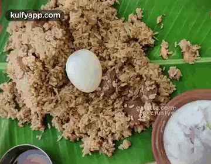
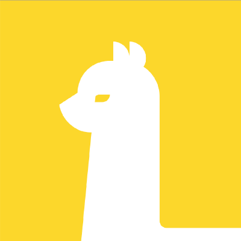
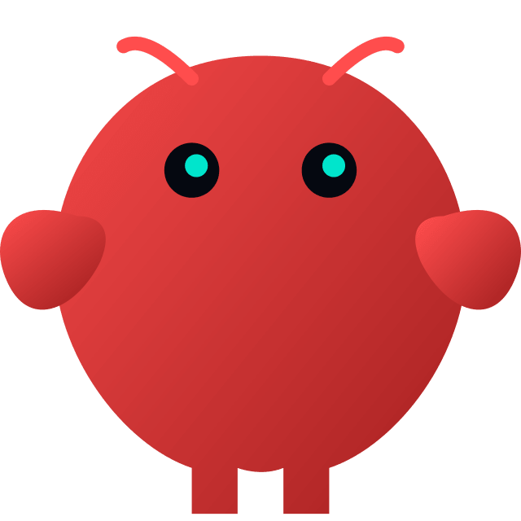

Use AI,
better.
Week 2 · From chatting to getting things done.
Last week.
1
📚→💃→💬
Training & inference
8
💃→→
Model → app → agent
Two big ideas for today.
🔧Tools📧📂🌐💻
🎓Skills📜👨🍳
Why is AI suddenly so good?
But more importantly…
Let's just call them tools.
💃
📈 Smarter models ✓
MCP
Plugins
Connectors
Tools
🔧Tools
🏗️ Deeper in Build
Tools connect it to everything.
💃
📧Email
📂Files
🌐The web
📊Your data
📅Calendar
💻Your computer
How does it connect?
📧Email
📅Calendar
📂Drive
📈Trading
🔧Tools
🔒 tickets.example.com
Book
No connector
🖱️ Browser use
Three ways in.
🔌MCP📧📅📂
🧩Plugins🔌🎓⚙️
🖱️Browser use🌐
But wait.
Who makes better biryani?
But why?
Skills = the recipe.
🧑💻You
🍚🍗🧅🌶️🧄🌿
👨🍳Ramu Bhai
🍚🍗🧅🌶️🧄🌿
🍲😬⭐⭐

⭐⭐⭐⭐⭐
📜 Recipe
🍚 Soak rice 30 min🧅 Fry till golden🔥 Dum 40 min🤫 Secret masala
🧰 Tools
🧰 Tools
🎓 Skill
Hire an expert.
plug in a skill
🧾Tax expert
🎤Interviewer
✍️Your voice
📊Excel pro
Plug in a skill. Get an expert.
Two kinds of AI agents.
Let's start here.
Three kinds of agents.
🧰 General purpose
Plug into any of them
🎓Skillsgive it expertise
1 · Chat.
 ChatGPTFree
ChatGPTFree ClaudeFree
ClaudeFree GeminiFree
GeminiFree📚Learn better
🎬Watch better
🔍Research better
🛒Shop better
📥Organize better
🎙️Capture better
Inside a chatbot.
💃
Model
Tools
Environment🌐 Your apps, online✕ No computer Learn anything.
🧑💻“Explain how inflation works. Start like I'm 10, then go deeper. Then quiz me.”
📈Inflation😵💫
💬 Chat
🧒Age 10
🧑Age 15
🎓Expert
❓ Quiz
Prices up 10%, pay up 5%. Richer or poorer?
Watch a video for you.
🧑💻“Here's the 1-hour school board meeting. What got decided, and when?”
💬 Chat
04:12💰 Budget approved
21:40🚌 New bus route
48:05⏰ Later start time
Deep research.
🧑💻“Which family EV under $45k is best for road trips? Compare range, charging and safety.”
🌐🌐🌐🌐🌐🌐🌐🌐🌐🌐🌐🌐
🌐 The whole web
🔍 Deep research⏱️ ~15 min
📑 Family EVs for road trips
[1][2][3]… 84 sources
🔎Check the sources
Shop smarter.
🧑💻“Find the best 65-inch TV under $800. Compare prices and real reviews across stores.”
🛒
AmazonBest BuyCostcoWalmartTarget
⭐ thousands of reviews
🔍 Web search
| TV | Store | Price | ⭐ |
|---|
| TV A | Costco | $649 | 4.7 |
| TV B | Best Buy | $699 | 4.5 |
| TV C | Amazon | $779 | 4.4 |
🥇 Best pick
🔗 Links to buy
Tame your inbox.
🧑💻“Sort my inbox into bills, school and junk. Draft replies to anything urgent.”
✉️
📧
✉️
📨
✉️
📧
📧
✉️
📨
1,284
🧾Bills12
🏫School5
🗑️Junk1,031
✍️Drafts ready3
✋You hit send
Talk it out.
🧑💻“Here's my 20-minute voice memo from my walk. Turn it into notes, to-dos and bookmarks.”
🎙️ Voice memo 20:14
“um… so… oh, and also…”
🎙️ TranscribeNotion
💡 Ideas
• Parents' weekend workshop• Start a family recipe book
✅ To-do
☐ Call the plumber☐ Book Chennai flights
🔖 Bookmarks
🔗 That podcast on sleep🔗 The recipe Anu mentioned
2 · Its own computer.
Grok Bot$30/mo
Gemini Spark$20/mo
📊Analyze better
🧾Work better
🩻Understand better
💰Invest better
🗓️Book better
🎓Plan better
💸Save better
🎤Think better
Inside: its own computer.
💃
Model
Tools
Environment🌐 Your apps, onlinevia connectors Environment☁️Its own computer📁 Its files🌐 Its browser⌨️ Its terminal
🌙 Works while you sleep
Crunch the numbers.
🧑💻“Here's a year of my bank exports. Clean them up and show me where my money goes.”
| Date | Desc | Amt |
|---|
| 01/03/25 | AMZN Mktp | -23.99 |
| 3 Jan | amazon.com | $41 |
| 2025-01-04 | TRADER JOE'S | |
| 01/05/25 | ??? POS 8812 | -6.50 |
| Jan 6 | Shell Oil | 52.10 |
📄 × 12 messy files
☁️ Its own computer
$4.2k🛒
$3.1k🍽️
$2.6k🛍️
$1.5k✈️
PDFs to a table.
🧑💻“Pull the date, store and amount out of these 40 receipts into a spreadsheet.”
📎 Upload☁️ Its own computer
| Date | Store | Amount |
|---|
| Jan 4 | Costco | $182.40 |
| Jan 9 | Shell | $52.10 |
| Jan 12 | CVS | $18.75 |
| Jan 15 | Home Depot | $96.20 |
| ⋮ | | |
| Total | 40 | $2,318.55 |
📊 receipts.xlsx
Read your scans.
🧑💻“Here's the CD from my knee MRI. Turn it into images I can see, and explain them simply.”
💿
IMG0001.dcmIMG0002.dcm
… × 240 files
☁️ Its own computer
🩺 Ask your doctor
• Is that swelling normal for my age?
Manage my money.
🧑💻“Here's $100k of paper money. Research the market, then manage it, or just place a trade.”

Alpaca🧪 Paper$100,000
☁️ Its own computerAlpaca
📰News
📊Earnings
📈Charts
Order
BuyBUY 25 × AAPL
TypeMarket
Account🧪 Paper
✋Approve?
✅ Filled
Beat the DMV.
🧑💻“Check the NJ MVC site every hour and grab the first license-renewal slot near Edison.”
🔒 telegov.njportal.com
Appointments
✕✕✕✕✕✕✕✕✕✕✕✕✕✕✕
No appointments available
☁️ Its own computer🖱️ Browser use
9:00✕ Nothing
10:00✕ Nothing
11:00✅ Edison · Thu 9:20 AM
✋Book it?
📅 Booked + on your calendar
Find the right college.
🧑💻“Compare 12 colleges for my daughter who wants to study nursing: cost, fit and deadlines. Put it all in a spreadsheet.”
🎓
RutgersTCNJPenn StateDrexel+ 8 more
☁️ Its own computer🔍 Hundreds of pages
| School | Nursing | Cost | Fit |
|---|
| Rutgers | ✓ | $ | ⭐⭐⭐ |
| TCNJ | ✓ | $ | ⭐⭐⭐ |
| Penn State | ✓ | $$$ | ⭐⭐ |
| Drexel | ✓ | $$$ | ⭐⭐ |
| ⋮ | | | |
📊 colleges.xlsx
📅 Deadlines → your calendar
Watch the price.
🧑💻“Watch flights from Newark to Chennai for December. Tell me the moment one drops under $1,100.”
✈️
EWR → MAA
December · round trip
$1,340
☁️ Its own computer⏰ Checks daily
🔔 Dropped to $1,060!
✋You book it
Grill me.
🧑💻“Use grill-me: help me plan my daughter's 7th birthday party.”
🎂❓🎈
How well the AI gets you
☁️ Its own computer🎓 Skill · grill-me
❓ How many kids?
❓ What's the budget?
❓ Indoor or outdoor?
❓ Any allergies?
📋 12 kids · $300 · backyard · nut-free
With a computer.
+
💻
💻Computer access
💻Computer access
3 · Your computer.
Claude Cowork$20/mo
 Claude Code$20/mo
Claude Code$20/moCodexFree

OpenClawFree + AI fees🗂️Tidy better
📸Remember better
📖Read better
🖍️Parent better
Inside: YOUR computer.
💻Computer access
💃
Model
Tools
Environment☁️Its own computer📁 Its files🌐 Its browser⌨️ Its terminal
Environment💻YOUR computer📁 YOUR files🌐 YOUR browser🖨️ YOUR printer
🛡️ Asks first
💻Computer access
Clean up YOUR desktop.
🧑💻“My desktop is a mess. Sort everything into folders and bin the duplicates.”
🖼️IMG_2231.jpg
🧾tax_2025.pdf
📄Resume_v3.docx
🖼️IMG_2231 (1).jpg
🍲biryani.pdf
📄Resume_v3 copy.docx
🧾W-2.pdf
🖼️beach.png
💻 YOUR computer
📁Photos
📁Taxes
📁Recipes
📁Resumes
🗑️Duplicates
💻Computer access
Name YOUR photos.
🧑💻“Rename my 500 trip photos by date and place, like '2024-03 Chennai - Marina Beach'.”
🖼️ IMG_4421.jpg🖼️ IMG_4422.jpg🖼️ DSC_0091.jpg🖼️ PXL_20240314.jpg🖼️ IMG_4423 (1).jpg… × 500
💻 YOUR computer👀 Looks at each photo
2024-03 Chennai - Marina Beach2024-03 Chennai - Kapaleeshwarar2024-03 Madurai - Meenakshi Temple2024-11 Edison - Diwali party…
📁 Sorted into 6 trip folders
💻Computer access
Turn videos into a book.
🧑💻“Take this 12-video course playlist and turn it into a neat book with chapters.”
💻 Your computer🎓 Skill · send-to-kindle
📖 My Course Book
1 · Getting started3
2 · The basics11
3 · Your first project24
⋮
12 · Wrap-up141
📲 Sent to Kindle
💻Computer access
A coloring page every morning.
🧑💻“Every morning at 7, make a coloring page for Maya (6, loves dinosaurs and cricket) and print it.”
⏰ 7:00 AM
👧
Maya · 6 · 🦕 🏏
⏰ Every morning💻 Your computer
🖨️
🦕🏏
🖍️
Now, purpose built.
📓NotebookLMYour sources → podcast, quiz, map
🎓Learn Your WayTextbook → your lesson
🧪AI StudioTry it, build it
❔…
Think like a CEO.
🧑💼
← You
Chief of staff
📥 Inbox Ida
✈️ Travel Tara
🧾 Tax Tom
🎓 College Cara
Everyone gets a chief of staff now.
Don't think small.
✍️Fix my email
🗂️Run the family paperwork
🏪Run my side business
🚀Your crazy idea
💡 Bring it. In Week 3, we build it.
Start here.
😤Your most annoying taskNot the most impressive one
🎙️Talk for 15 minutesYour life, your job, what's broken
🔌Connect your appsEmail, calendar, Drive
👀Watch first, then let it actRead → draft → do